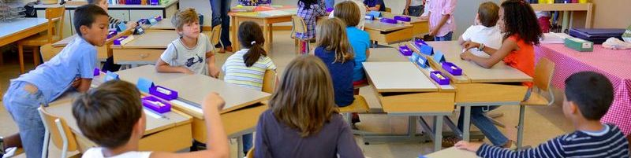

Vie Scolaire
Inscription pour les école :
Les inscriptions se font en Mairie de 8h30 à 12h30 et de 13h30 à 17h15 du Lundi au Vendredi.
Les pièces à fournir :
- Un justificatif de travail des parents
- Un justificatif d'assurance
- "Responsabilité Civile"
- L'avis d'impôt sur le revenu
- Attestation de versement des allocations CAF
Contacts vers les écoles, Collèges et Lycées et services : École Maternelle Jean Picart Le Doux - 79 RUE DU G. DE GAULLE - 02 35 74 57 55
École Maternelle Jean Lurçat - Impasse Jean Lurçat - 02 35 76 27 63
École Primaire Aragon / Prévert - Rue Gilbert GRENIER - 02 35 74 57 54
Collège Jean ZAY - 1 Rue du 11 Novembre - 02 32 82 81 50
Lycée d'enseignement Professionel Bernard Palissy - 76152 Maromme - 02 32 82 10 20
Lycée Vallée du Cailly - 44 Rue du petit Aulnay - 02 32 82 52 00
Service de psychologie scolaire - Rue Gilbert GRENIER - 02 35 74 57 54
Parents d'élèves Collège Jean ZAY - Corinne.fabulet@wanadoo.fr
Jeunesse et Loisirs
Accueil du centre de loisiris Impasse Jean Lurçat :
Ce service est proposé aux enfants de 3 à 13 ans, sur le temps des vacances scolaires de la toussaint, d’hiver, de printemps et d’été et tous les mercredis de 8h à 18h. Les enfants de 3 à 5 ans sont accueillis aux mois de juillet et août . De nombreuses sorties sont organisées : cinéma, piscine, bowling, parcs d’attractions, sortie à la mer …. Les inscriptions se font en mairie, les pièces à fournir sont les suivantes :
3 derniers bulletins de salaire, ou Assedic relevé CAF
N° sécurité sociale couvrant l’enfant
Carnet de santé de l’enfant
L’inscription est obligatoire car les places sont limitées. Vous pouvez contacter Hélène BERTOZZI au 02.32.96.09.38 ou par mail : alsh.lehoulme@orange.fr
L'espace Jeunes
L'espace jeunes vous accueille aux vacances de la toussaint, d’hivers et de printemps pour diverses sorties. (Karting, Dock Laser, Bowling, Théâtre, Ciné...) des Ateliers (Graff, Pop art, cerf volant...) des jeux (Jeux de piste, Rallyes...) Mais vous pourrez aussi profiter du Baby foot, de la console de jeu, aller surfer sur le « net » ou simplement venir discuter entre potes. Un point info jeunes sera à votre disposition .pour, vous accueillir et vous accompagner dans la réalisation de vos projets (licence sportive, projets en commun et sorties)..
Vacances AdosDurant la période des mois de juillet l’espace jeunes, vous proposera des séjours variés. Vous pourrez donner vos idées et vos envies lors des ateliers pour organiser des séjours de courte durée (sportifs, festival,..) Pour plus infos: s’adresser à Julie, espace jeunes impasse Jean LURCAT 06 11 03 36 70
L'enfance et l'action sociale
Lieu d'accueil enfants, parents :
Lieu d'accueil Enfants-parents accueil libre, anonyme et gratuit des enfants de 0 à 4 ans, accompagnés des parents ou d'un adulte proche.
18 rue des Martyrs 76760 Le Houlme
Tel : 02 35 75 31 05
Le lieu d'accueil est ouvert actuellement le mardi et le vendredi de 9H à 12H, le jeudi de 15h à 18h.
Fermé durant les vacances scolaires.
Contact : 'PARENTS AUJOURD'HUI'
02 35 89 67 32
a.rpp@wanadoo.fr